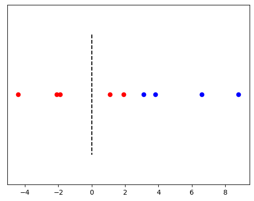
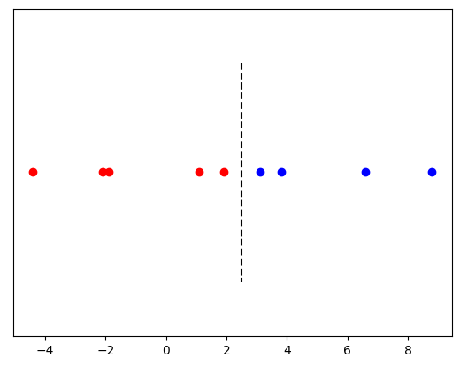
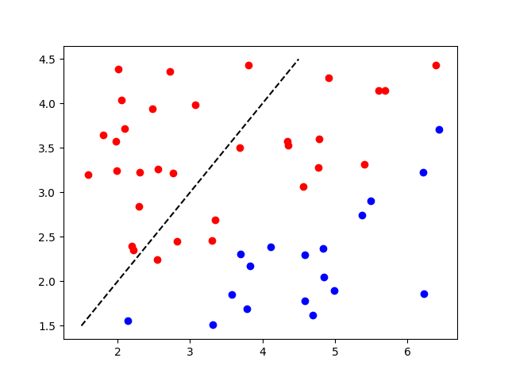
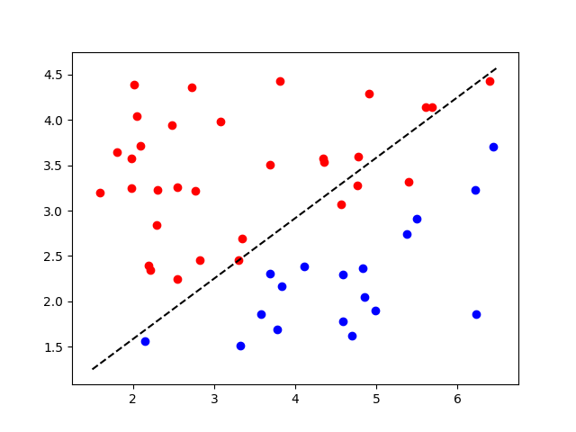
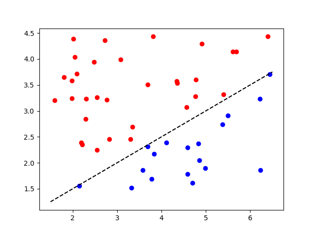

Artificial "Intelligence"
In this study, you were given predictions by an artificial intelligence (AI) classifier. The classifier is 'trained' using a process known as machine learning (ML).
A simple example of a classifier would be one that separates red and blue dots arranged on a line, (the dots are known as our training data). We would like to place a dashed line, that indicates anything to the left of the line is red, and anything to the right is blue. First an initial guess is supplied, with the dashed line at 0:

We can see that there are two dots to the right of the dashed line that have been misclassified: the classifier predicts that another dot in the same place would be blue (as they are to the right of the dashed line), but we can see clearly that they are red. We train the classifier by letting it see all the data, and calculating how far wrong it is. We then make small adjustments to continually reduce the degree of error, until we end up with a solution:

In these examples, the dots only vary along the horizontal dimension. This is known as a feature. We can perform a similar process using dots that vary along both the horizontal and vertical axes, i.e. with two dimensions/features.

This problem is harder, but the methods we use to solve it are fundamentally the same as the one-dimensional version. Because it is trickier, we try out a smaller adjustment:

This is closer, though we can see there are still a few red points that are misclassified. But we can just feed in all of the training data again:

And we've arrived at our solution. Importantly, we have a dashed line that tells us whether any new dot (that we don't know the colour for) is likely to be blue or red -- this is known as prediction.
In the same way we scaled up from one dimension to two, we can continue using as many dimensions as we like -- mathematically, it makes no difference, (though past three dimensions there is of course no convenient way to visualise this).
How does this help with pictures of dogs?
With the two dimensional blue and red dots, each dot could be described as a combination of three things: its value along the horizontal feature (from ~1.5 -- 6.5); its value along the vertical feature (from around 1.5 -- 4.5); and its colour.
Consider a black and white image: this can also be described as a collection of features, where each pixel is a single feature. There are a lot more of them though -- a small-ish 300x200 image will consist of 60,000 pixels, and hence there are 60,000 features, each taking a value from 0 (darkest black) to 255 (brightest white). For a colour image, we just use the three red-blue-green RGB 'channels' instead, so we would have 300x200x3 = 180,000 features.
When we trained our red/blue classifier, we also needed to know whether the dots were red or blue. Similarly, if we want to train a classifier to recognise different breeds of dogs, we assign the name of the breed to each photograph.
The two-dimensional classifier above is known as a neuron -- and work similarly to the neurons in your brain. By combining thousands, or even millions, of these neurons together, we form neural networks, which can attack problems much more complex than the red/blue separation.
Some people might argue that machine learning is a lot more complicated than this, but while the maths might get harder, what I've described above is essentially all there is to it.

credit: xkcd